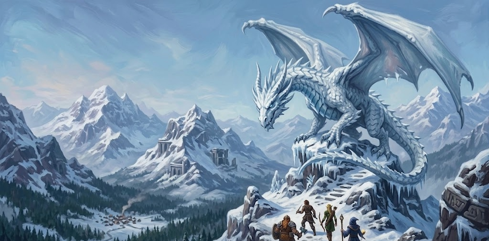

Dragon of Icespire Peak
[ THE FROZEN FRONTIER ]
"A dragon has taken residence in the nearby mountains, and you must fight for a town on the brink of destruction."
🏔️ Step Into the Frontier
Prepare yourself to step into a land where the wind howls, the taverns are warm, and danger is always a short hike away. You’ll explore rugged hills, haunted ruins, secret caves, and a half-dozen quirky homesteads—all while a hungry young white dragon prowls overhead.
This is a sandbox-style game where you choose the quests that speak to you and shape the story through your own cleverness, curiosity, and courage. Expect a tone that mixes cozy fantasy, lighthearted humor, and moments of real heroism.
✨ New to D&D? You belong here!
No experience needed—seriously! I love introducing beginners to D&D and making sure everyone feels welcome and seen at the table. I provide clear, patient guidance, beginner-friendly options, and cheat sheets.
- A Flexible Roleplay Space: You’ll have downtime to breathe, banter, and roleplay—but when the claws come out, expect vivid, cinematic action.
- Premium VTT Experience: We use Foundry VTT to provide handouts, maps, and dynamic lighting that help you visualize the world without spoiling the "theater of the mind."
- Full D&D Beyond Sharing: You will have access to my entire digital library for character creation (PHB, Tasha’s, Xanathar’s, and more).
⚔️ Character Creation & Rules
We begin our adventure at Level 1, and I provide a FREE Session 0 to walk you through character creation from scratch if you need it!
- Progression: Level 1 to 7 throughout the campaign.
- Stats: Standard Point Buy.
- Allowed Sources: All official 2014 5e books. (No homebrew/UA classes for this adventure).
- Starting Gear: Standard class/background equipment PLUS: 1 Healing Potion, 1 Common Magic Item, and 1 Special Trinket (an heirloom or keepsake with no mechanical effect, just story flavor!).
🎲 Optional Homebrew Rules
We will vote on these mechanics during Session 0 to keep the game immersive:
- Blind Checks: Stealth or Perception rolled blindly to the DM. (Example: You spot a glimmer in the dark forest and creep closer, convinced it’s a monster... only to realize it was just a glowing mushroom! If you saw you rolled a Nat 1, the tension would be gone.)
- Hidden Death Saves: Rolled privately between the player and DM to keep the party on their toes.
- Critical Initiative: A Natural 20 allows you to choose your exact place in the turn order for a tactical advantage.
🛡️ Safety & Table Culture
My tables have a zero-tolerance policy for hostility. We use Lines & Veils and X/N/O cards. Your comfort matters, and my goal is to create a fun, cozy, and supportive environment for everyone.
Click to view Content Warnings for this campaign
- Fantasy Violence & Combat
- Animal/Monster Threats
- Freezing/Cold Weather Hazards
- Heights & Falling Risks
- Minor Spiders/Insects
- Undead/Ghosts